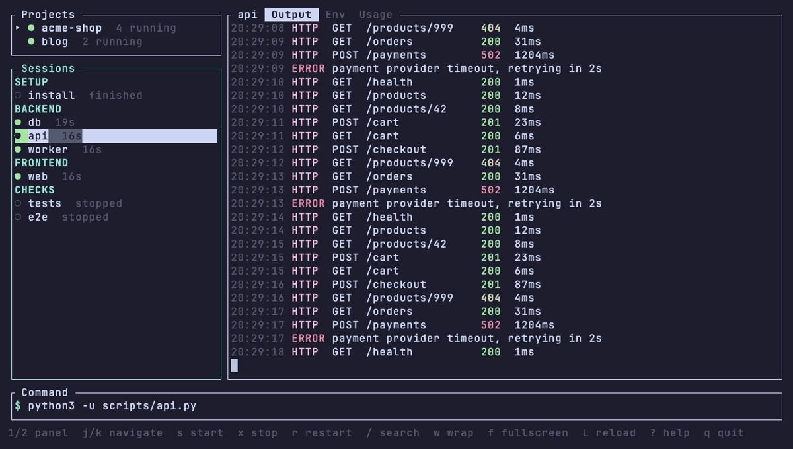

TUI
The left pane lists the sessions (and a projects panel to switch between daemons); the right pane shows
the output of the selected session, with an Output, an Env and a Usage tab. Press ? for the same list as below.
Reading the output
Search with /, walk through the matches with n / N, go fullscreen with f.
Tabs and projects
Tab shows the environment and the resource usage of a session. 1 moves to the projects panel,
Enter switches to the highlighted project.

Keys
| Key | Action |
|---|---|
j / k, ↑ / ↓ | Next / previous session |
s / x / r | Start / stop / restart the session (stop = SIGTERM, then SIGKILL after 10 s) |
S / X / R | Start / stop / restart the whole group |
PgUp / PgDn, mouse wheel | Scroll the output |
g / G | Top of history / back to live |
Tab, click | Switch between the Output, Env and Usage tabs |
w | Soft-wrap on/off |
← / → | Scroll horizontally (wrap off) |
f | Fullscreen output (Esc to leave) |
/, n / N | Search the output, older / newer match (Esc clears) |
| mouse drag | Select text in the output panel and copy it to the clipboard |
L | Reload the config (running sessions are left unchanged) |
q | Quit the TUI, sessions keep running |
Q | Stop all sessions and the daemon |
The terminal tab title reflects the state of the session.
◔ marks a session waiting for its dependencies, ✖ blocked one held back by a failed
dependency. The reason is shown above the command of the selected session.